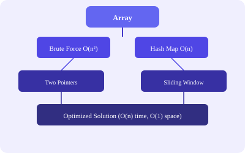

# Brute Force O(n²)
def twoSum(nums, target):
for i in range(len(nums)):
for j in range(i+1, len(nums)):
if nums[i] + nums[j] == target:
return [i, j]
# Hash Map O(n)
def twoSum(nums, target):
seen = {}
for i, val in enumerate(nums):
diff = target - val
if diff in seen:
return [seen[diff], i]
seen[val] = idef maxProfit(prices):
min_price = float('inf')
max_profit = 0
for price in prices:
min_price = min(min_price, price)
max_profit = max(max_profit, price - min_price)
return max_profit// C++ — Boyer-Moore Voting O(n)
int majorityElement(vector<int>& nums) {
int count = 0, candidate = 0;
for (int num : nums) {
if (count == 0) candidate = num;
count += (num == candidate) ? 1 : -1;
}
return candidate;
}| Problem | Approach | Complexity |
|---|---|---|
| Move Zeroes | Two pointers, swap non-zero left | O(n), O(1) |
| Squares of Sorted Array | Two pointers from ends | O(n), O(n) |
| Merge Sorted Array | Merge from end | O(m+n), O(1) |
| Pivot Index | Prefix sum | O(n), O(1) |
| Running Sum | In-place prefix | O(n), O(1) |